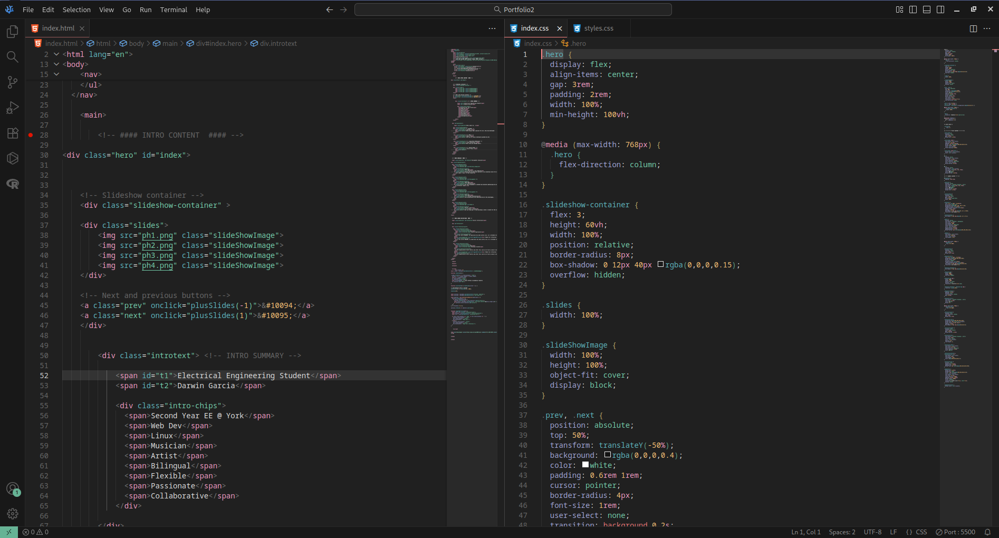
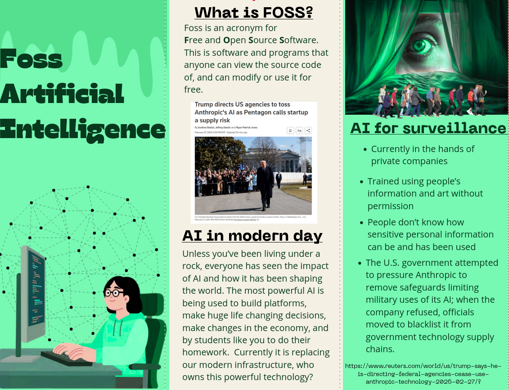
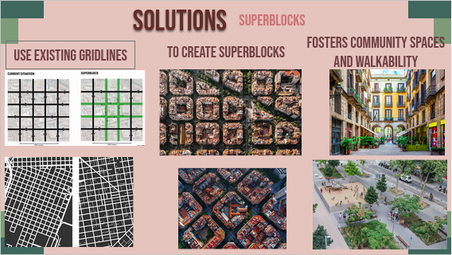
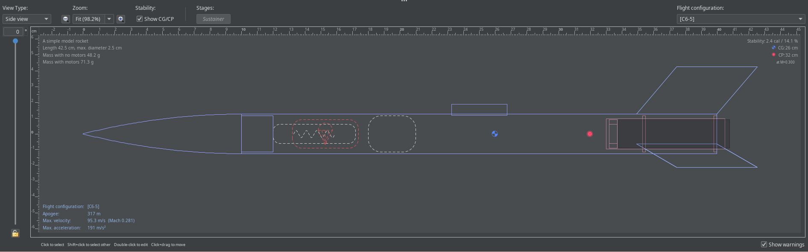

Portfolio — This Website
Knowing how to advertise yourself is an essential skill for entering your career. One of the most professional tools is having a well-crafted personalized portfolio website. It emphasizes important aspects of communication such as self-presentation and professionalism. This portfolio is also fun for me as building it has been a useful excuse to build a site again, which is what I first did many times when I started coding at 14 years old. Back when I was 17 I also built one and it’s on my github. This website demonstrates my strong communication skills that go beyond writing, and extend and complement my technical skills. The result of both is a visually appealing and informative website. In the near future, with the more time I’ll have this summer I plan on building a more creative portfolio website that incorporates more ideas I have, so stay tuned!

Brochure
For this assignment I created two brochures addressing AI issues, one for a professional audience and one for a general inexperienced audience. I selected this piece for my showcase because it taught me how to present the same information to very different audiences while still getting the same points across. While it didn't push me outside my comfort zone, it sharpened my ability to adapt tone and language for different readers.
Click here to download it
Group Presentation
This presentation also addressed one of the challenges, specifically creating more human friendly urban spaces. I decided to put this assignment on my showcase because it’s the perfect demonstration of communication abilities. This was a group projected in which we all had to decide a topic and split up the work evenly and agree with each other. It was an excellent opportunity to work on communication skills and as well as presentation and creativite skills.

Level 1 rocket
Not too long ago I tried building a level 1 rocket for the rocket club at York. I discussed with many new people, learned software and made plans. I designed a rocket, and this pushed me outside my comfort zone. Unfortunately I haven’t been able to finish due to me getting busy, but I plan to finish what I started.
In the course ENG2003, my experience has been pretty nice. As I attended tutorials and lectures, and kept up with my assignments I never learned anything new or had any shocking realizations but it did help me build on existing foundations. This ...
In the course ENG2003, my experience has been pretty nice. As I attended tutorials and lectures, and kept up with my assignments I never learned anything new or had any shocking realizations but it did help me build on existing foundations. This course helped to refine communication skills and concepts that are usually neglected in the rest of my classes. The lectures and tutorials weren’t dense material and concepts, they were easy to follow and the in class activities were fun. The course was pretty much what I expected it to be, some communication activities but nothing really new, for the reasons I already explained. The course content which was most useful was the group presentation, the cover letter, and the term project 2 (the portfolio). The assignments I mentioned were the most useful because they developed skills directly relevant to all aspects of my life. The group project helped teach how to collaborate, discuss ideas, and execute as a team. The cover letter helped teach how to write a cover letter, which I will do hundreds of times in my life. And the portfolio helps create a professional summary that any employer or partner can look at, if refined it's a tool which can continually be used. I learned throughout that axiom 8 was a really effective concept to keep in mind when putting together my assignments, “Effective professional communication is audience-centred, not self-centred”. I thought about how this would come across to the audience instead of me and I built accordingly. I found the BBC grand challenges the most interesting topic in this course, it allowed for a lot of freedom and proper fun options to engage in, in many different ways.
My communication skills before and after this course are fairly similar overall, though the course helped reinforce and refine what I already practiced. This course might have helped a bit, but since entering university and getting more involved in clubs ...
My communication skills before and after this course are fairly similar overall, though the course helped reinforce and refine what I already practiced. This course might have helped a bit, but since entering university and getting more involved in clubs, groups, and other teams my overall social skills have improved quite drastically. During this course the communication skill that I have improved the most would be my technical writing, as I have written quite a bit over the length of this course I also had to take into consideration how it came across to others. As well as taking into account the 7 C’s of communication. The skill that I still have to work on is my presentation skills, I can have a clear voice and make eye contact, however after a while nerves build up and I have trouble remembering my content, this is something I will need to practice. I also realized that I need to work on my time management, throughout assignments, projects and presentations I have done. I realized that I am capable of all this, things often get left till the last minute which creates a lot of stress and my work to be rushed. The work I have produced is always to my satisfaction, when I have the proper time to do it I always end up more proud as I can do it properly. This course will not really affect the way that I approach other courses, however in terms of my career it has motivated me to create a more professional persona and be more social. In terms of work that requires me to persuade people or get something I have really taken axiom 5 (Communication is the main means through which we exert influence) and 1 (Communication is not simply an exchange of ideas or information, but an interaction between people) to heart. When trying to convince my peers of anything I remind myself that I’m not just trying to exchange ideas, but this is a delicate interaction, I have to play to its strengths. I have also taken a more personal approach to interacting with people, when I can I try to meet in person and have a genuine conversation with them, that is more convincing than an email or text. Often it’s easy to fall into this mentality that you just have to go through your courses and do the work, it’s a very passive way to go through university and so many people fall into this trap. But this course and others have helped me realize that this experience goes alongside developing yourself professionally and socially. If I want to come out of university as a professional then this means I have to have a clear vision of who I want to be, and oversaturate every detail of that person, I need to go to more networking events, get involved in clubs and design teams, converse with professors and managers, at the same time improve my skills and add them to a nice attractive portfolio as a professional summary. These are all things I will apply.